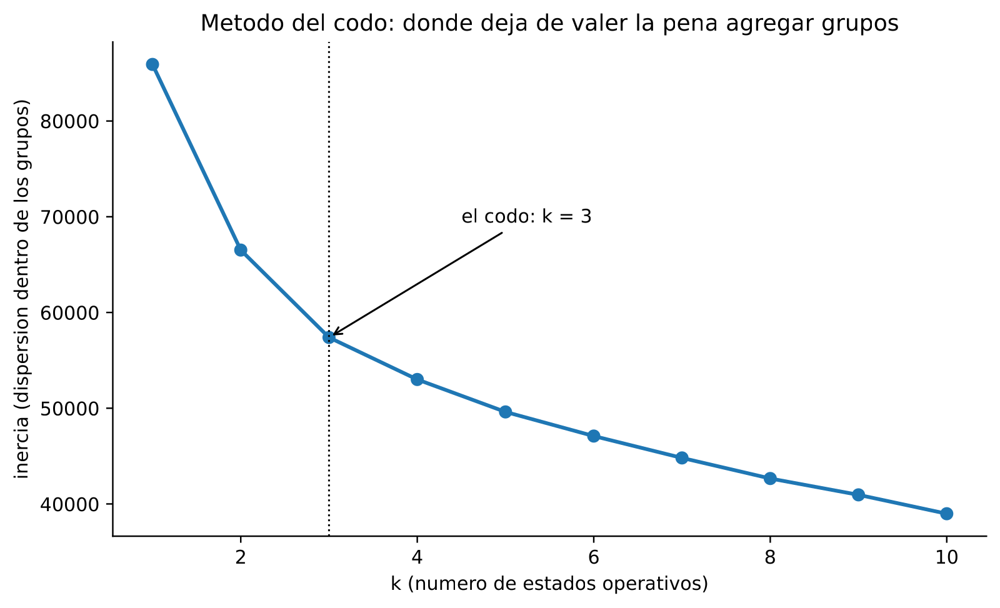
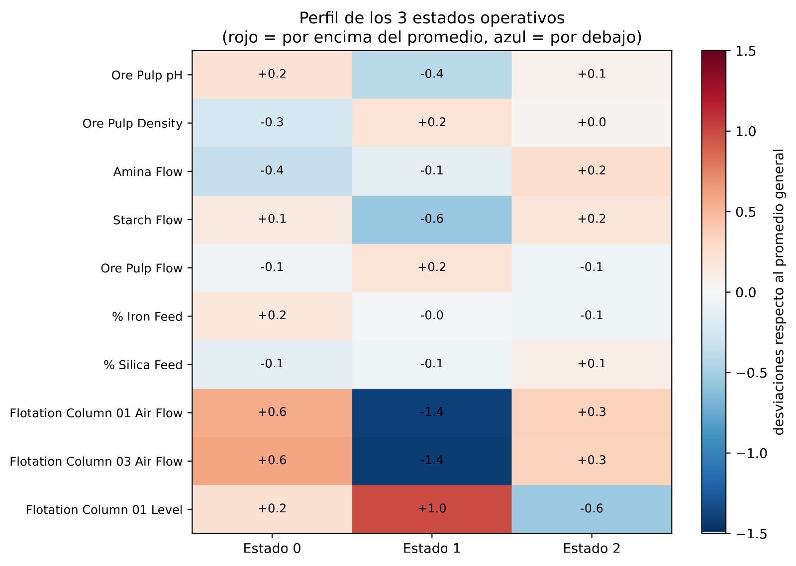
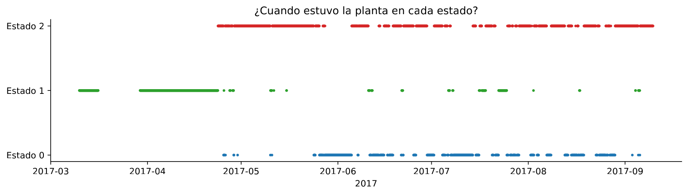
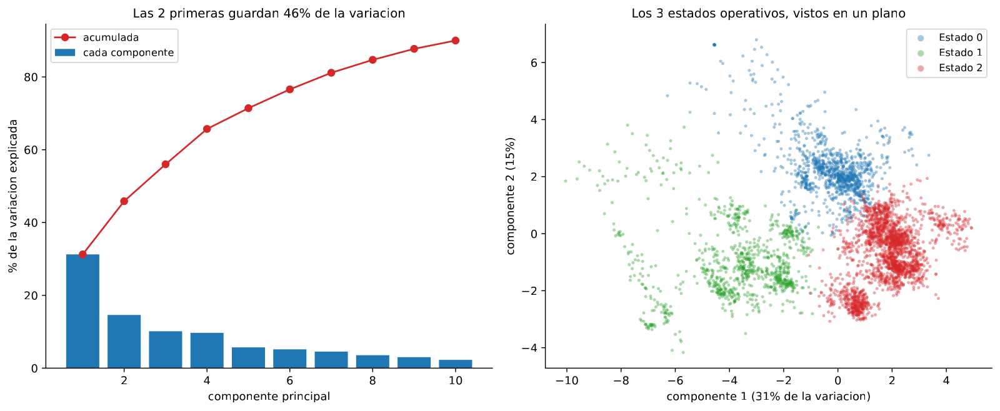

En 30 segundos
- k = 3. Sin mirar el objetivo, la planta se separa sola en tres estados operativos.
- Uno de ellos desaparece en mayo. El estado 1 ocupa el 100 % de marzo, el 78 % de abril y el 2 % de mayo.
- Ahí está la causa de todo lo anterior. Los modelos se entrenaron con una planta y se probaron con otra.
- Los estados tienen calidades distintas: 1,85 · 2,60 · 2,46 de SiO₂ medio. El aire de columna los separa.
- PCA confirma la estructura: 46 % de la variación en dos ejes, aireación y niveles.
Qué resuelve este módulo
Los módulos 2 a 8 midieron que no se puede predecir. Ninguno explicó por qué.
Aquí se busca la causa sin usar el objetivo. Eso es aprendizaje no supervisado: encontrar estructura en los datos sin decirle al algoritmo qué buscar.
Y aparece la explicación que faltaba, que no es sobre el modelo sino sobre la planta.
Antes de la teoría: un ejemplo de juguete
Seis horas, una sola variable: el caudal de aire de una columna.
240 245 250 290 295 300A ojo hay dos grupos. Vamos a encontrarlos midiendo, y de paso a decidir cuántos hay.
Paso 1. Un solo grupo
Si todo es un grupo, su centro es la media.
centro = (240 + 245 + 250 + 290 + 295 + 300) / 6 = 1620 / 6 = 270La inercia es la suma de las distancias al cuadrado de cada punto a su centro.
inercia = 30² + 25² + 20² + 20² + 25² + 30²
= 900 + 625 + 400 + 400 + 625 + 900
= 3850Paso 2. Dos grupos
Los tres bajos por un lado y los tres altos por otro.
grupo A: 240, 245, 250 centro 245 inercia = 25 + 0 + 25 = 50
grupo B: 290, 295, 300 centro 295 inercia = 25 + 0 + 25 = 50
inercia total = 100De 3850 a 100. La inercia cae a la cuarentava parte con una sola división.
Paso 3. Tres grupos
Partiendo el grupo A en dos:
grupo A1: 240, 245 centro 242,5 inercia = 6,25 + 6,25 = 12,5
grupo A2: 250 centro 250 inercia = 0
grupo B: 290, 295, 300 centro 295 inercia = 50
inercia total = 62,5Paso 4. El codo
| Grupos | Inercia | Lo que bajó |
|---|---|---|
| 1 | 3850 | referencia |
| 2 | 100 | 3750 |
| 3 | 62,5 | 37,5 |
El codo está en 2. Pasar de uno a dos grupos quita el 97 % de la inercia. Pasar de dos a tres quita casi nada.
Añadir grupos siempre baja la inercia, hasta llegar a un grupo por punto y una inercia de cero. Por eso no se elige el mínimo: se elige donde la curva deja de caer en picado.
Paso 5. Qué acaba de pasar
El algoritmo no sabía nada de sílice, ni de calidad, ni de especificación. Solo agrupó horas parecidas entre sí.
Eso es lo que lo hace útil aquí. Si aparecen grupos con calidades distintas, esos grupos son un hallazgo y no una construcción. Nadie los metió en los datos.
Glosario
10 términos, en palabras simples
- Aprendizaje no supervisado. Buscar estructura en los datos sin usar la respuesta.
- Agrupamiento. Repartir las filas en grupos de filas parecidas. En inglés, clustering.
- k-medias. El método más común. Coloca k centros y va moviéndolos hasta que se estabilizan.
- Inercia. La suma de distancias al cuadrado de cada punto a su centro. Baja siempre al añadir grupos.
- Método del codo. Dibujar la inercia contra k y buscar dónde la curva se dobla.
- Estado operativo. Un grupo de horas en las que la planta se comportaba de forma parecida.
- PCA. Análisis de componentes principales. Busca las combinaciones de variables que más variación explican.
- Componente principal. Cada uno de esos ejes nuevos. El primero es el que más variación captura.
- Varianza explicada. Qué porcentaje de la variación total recoge cada componente.
- Deriva de concepto. Que la relación entre variables y objetivo cambie con el tiempo. En inglés, concept drift.
Paso a paso
Paso 1. Escalar, porque aquí las distancias mandan
k-medias mide distancias. Sin escalar, un caudal de 300 pesa cien veces más que un pH de 9,8, y los grupos salen decididos por las unidades.
Paso 2. Usar solo variables de proceso
El objetivo se deja fuera a propósito. Si se metiera, los grupos saldrían separados por sílice por construcción y no demostrarían nada.
Dejándolo fuera, la sílice media de cada grupo es una comprobación independiente.
Paso 3. Elegir k con el codo
Se corre k-medias para varios valores de k y se dibuja la inercia. Donde la curva se dobla, ahí está el número de estados.
Paso 4. Leer el perfil de cada estado
Un número de grupo no dice nada. Hay que mirar los valores medios de cada variable dentro de cada grupo y traducirlos a lenguaje de planta.
Paso 5. Mirar cuándo mandó cada estado
Esta es la pasada que resuelve el proyecto. Los grupos se colocan en el tiempo, mes a mes.
Paso 6. Confirmar con PCA
k-medias podría estar inventando grupos donde solo hay una nube continua. PCA proyecta los datos en dos ejes y permite verlos.
El código, por partes
Paso 1. Escalar y buscar el codo
from sklearn.cluster import KMeans
from sklearn.preprocessing import StandardScaler
X = StandardScaler().fit_transform(data[base])
for k in range(1, 11):
print(k, KMeans(n_clusters=k, n_init=10, random_state=0).fit(X).inertia_)línea por línea, 4 entradas
StandardScaler().fit_transform(...)- Ajusta y aplica en un paso. Aquí no hay fuga posible, porque no se predice nada.
KMeans(n_clusters=k)- Coloca k centros y los mueve hasta que dejan de cambiar.
n_init=10- Repite diez veces con arranques distintos y se queda con el mejor. k-medias depende del punto de partida.
.inertia_- La suma de distancias al cuadrado a los centros. El guion bajo final marca lo que el modelo aprendió al ajustar.
Perfil de cada estado (unidades reales):
Ore Pulp pH Ore Pulp Density Amina Flow Starch Flow % Silica Feed Flotation Column 01 Air Flow % SiO2 concentrado horas
cluster
0 9.85 1.66 458.87 2999.39 13.72 296.46 1.85 1083
1 9.62 1.69 475.82 2328.70 14.20 239.11 2.60 935
2 9.79 1.68 509.05 3045.81 15.35 290.30 2.46 2073
Paso 2. Leer los tres estados

| Estado | Horas | Aire columna 1 | Amina | Almidón | SiO₂ feed | SiO₂ concentrado |
|---|---|---|---|---|---|---|
| 0 | 1.083 | 296 | 459 | 2.999 | 13,7 | 1,85 |
| 1 | 935 | 239 | 476 | 2.329 | 14,2 | 2,60 |
| 2 | 2.073 | 290 | 509 | 3.046 | 15,4 | 2,46 |
Traducido a lenguaje de planta:
- Estado 0, la marcha buena. Aire alto, alimentación limpia, y la mejor calidad del histórico con 1,85 % de sílice.
- Estado 1, aire bajo. El caudal de aire cae a 239 frente a los 290 y 296 de los otros dos, y el almidón también baja. La calidad se va a 2,60.
- Estado 2, peleando. La alimentación llega más sucia, con 15,4 % de sílice, y la amina sube al máximo, 509. La planta compensa y se queda en 2,46.
Los grupos salieron de variables de proceso, sin mirar la sílice. Que las tres calidades medias sean distintas es la comprobación de que los estados son reales.
Paso 3. Colocar los estados en el tiempo
por_mes = etiquetas.groupby([data.index.to_period("M"), "estado"]).size().unstack(fill_value=0)
print((por_mes.T / por_mes.sum(axis=1)).T.mul(100).round(0).to_string())línea por línea, 3 entradas
.to_period("M")- Convierte cada fecha en su mes, para poder agrupar por mes.
.unstack(fill_value=0)- Convierte los estados en columnas. Los meses sin ese estado quedan en cero.
(tabla.T / tabla.sum(axis=1)).T- Convierte los conteos en porcentaje de cada mes. La doble transposición es para que la división vaya por filas.
estado 0 1 2
date
2017-03 0 100 0
2017-04 2 78 21
2017-05 20 2 78
2017-06 42 4 55
2017-07 45 15 40
2017-08 38 1 61
2017-09 1 6 93
Paso 4. Confirmar con PCA
from sklearn.decomposition import PCA
pca = PCA(n_components=2).fit(X)
print(pca.explained_variance_ratio_.round(3))línea por línea, 3 entradas
PCA(n_components=2)- Busca los dos ejes que más variación capturan, combinando todas las columnas.
.explained_variance_ratio_- Qué fracción de la variación total recoge cada eje.
.components_- El peso de cada variable original en cada eje. Es lo que permite ponerles nombre.
Variables que mas definen la componente 1:
Flotation Column 06 Air Flow 0.305658
Flotation Column 07 Air Flow 0.305294
Flotation Column 01 Air Flow 0.299694
Flotation Column 01 Level 0.297969
Variables que mas definen la componente 2:
Flotation Column 05 Level 0.404971
Flotation Column 04 Level 0.400331
Flotation Column 07 Level 0.386301
Los dos primeros ejes guardan el 46 % de la variación: 31 % el primero y 15 % el segundo.
El primero está dominado por caudales de aire, así que es aireación. El segundo, por niveles de columna. Dos perillas de operación, encontradas sin decirle al método qué buscar.
El resultado, medido
Qué esperábamos. Grupos difusos, o grupos que separasen turnos o días de la semana. Lo habitual al agrupar datos de proceso.
Qué salió. Tres estados con calidades distintas, y uno de ellos con fecha de caducidad.
| Mes | Estado 0 | Estado 1 | Estado 2 |
|---|---|---|---|
| Marzo | 0 % | 100 % | 0 % |
| Abril | 2 % | 78 % | 21 % |
| Mayo | 20 % | 2 % | 78 % |
| Junio | 42 % | 4 % | 55 % |
| Julio | 45 % | 15 % | 40 % |
| Agosto | 38 % | 1 % | 61 % |
| Septiembre | 1 % | 6 % | 93 % |
Qué significa. El estado 1 pasa del 100 % de las horas de marzo al 2 % en mayo. La planta cambió de forma de operar entre abril y mayo, y no volvió.
Ese estado se caracteriza por aire bajo, 239 frente a 290 y 296. Alguien subió el aire de las columnas, y desde entonces la planta opera de otra manera.
Por qué esto explica los módulos 2 a 8
El corte de entrenamiento del proyecto es el 1 de agosto. Marzo y abril, que son el 100 % y el 78 % del estado 1, están dentro del entrenamiento. Septiembre, que es 93 % estado 2, está dentro de la prueba.
Los modelos aprendieron relaciones de una planta y se examinaron sobre otra. Eso explica tres cosas medidas antes:
- La dispersión entre pliegues del módulo 4, de −0,011 a −0,271. Cada pliegue cae en una mezcla de estados distinta.
- La deriva que el módulo 10 va a medir mes a mes.
- Por qué reentrenar no arregla nada, medido en el módulo 8. El problema no es que el modelo envejezca, es que no hay una relación estable que aprender.
El hallazgo, en una frase
El aprendizaje no supervisado encontró la causa que ocho módulos de aprendizaje supervisado no pudieron ver, y lo hizo sin usar el objetivo ni una sola vez.
Lo que este módulo deja abierto
Falta cerrar el proyecto. Queda probar la técnica que todavía no se ha usado, las redes neuronales, y convertir todo esto en una recomendación defendible.
El módulo 10 hace las dos cosas, y mide la deriva que este módulo acaba de explicar.
Ojo
- La inercia siempre baja al añadir grupos. Con k igual al número de puntos vale cero. Por eso el codo se busca, y no el mínimo.
- Sin escalar, los grupos los deciden las unidades. Un caudal de 300 aplasta a un pH de 9,8.
- El objetivo se deja fuera del agrupamiento. Si entra, los grupos se separan por sílice por construcción y la comprobación se pierde.
- k-medias depende del arranque. Con
n_init=1puede caer en una solución mala. Diez arranques es el mínimo razonable. - k-medias siempre devuelve k grupos, haya estructura o no. El codo y la proyección de PCA son las dos comprobaciones de que los grupos existen.
- Un cambio de régimen no se arregla reentrenando. Si la relación cambió, el modelo viejo no estaba desactualizado: estaba describiendo otra planta.
Puente metalúrgico
Los tres estados son tres campañas de operación, y cualquier metalurgista los reconocería sin necesidad de k-medias si tuviera el registro de consignas delante. El problema es que ese registro no está en el archivo.
El estado 1 es un circuito con aireación baja: menos aire arrastra menos espuma, la selección mejora en teoría pero la capacidad cae, y la sílice se va a 2,60. El estado 2 es la planta compensando alimentación sucia. Entra 15,4 % de sílice frente a 13,7 %, y se sube la amina a 509 para arrastrar más ganga. Aun así el concentrado sale a 2,46.
Y el cambio de abril a mayo es una decisión de operación, no un fenómeno natural. Alguien subió el aire y lo dejó subido.
Modelar seis meses de esa planta con un solo modelo se parece a calibrar con patrones de dos preparaciones distintas. Sale una curva promedio, y no describe bien a ninguna de las dos.
Repaso
¿Por qué no se elige el k con la inercia más baja?
Porque la inercia siempre baja al añadir grupos, hasta llegar a cero con un grupo por punto. Es una métrica que no puede elegir.
En el ejemplo de juguete pasa de 3850 con un grupo a 100 con dos, y a 62,5 con tres. La primera división quita el 97 % y la segunda casi nada. El codo es ese punto donde la curva deja de caer en picado, y marca cuántos grupos hay de verdad. Sobre los datos reales el codo está en k = 3.
¿Por qué se deja el objetivo fuera del agrupamiento?
Para que la sílice media de cada grupo sirva como comprobación independiente.
Si el objetivo entrara entre las variables usadas para agrupar, k-medias separaría las horas por sílice y después encontraríamos, sin ninguna sorpresa, que los grupos tienen sílices distintas. Sería circular.
Agrupando solo con variables de proceso, las tres medias salen 1,85, 2,60 y 2,46. Eso es información nueva. Las condiciones de operación que el algoritmo distinguió tienen consecuencias reales sobre la calidad.
El estado 1 pasa del 100 % de marzo al 2 % de mayo. ¿Qué significa eso para el proyecto?
Que los modelos se entrenaron con una planta y se examinaron con otra.
El corte de entrenamiento está el 1 de agosto, así que marzo y abril, dominados por el estado 1, son parte del entrenamiento. Septiembre, que es 93 % estado 2, es parte de la prueba. Las relaciones entre variables de proceso y sílice aprendidas en un régimen no tienen por qué valer en el otro. Eso explica la dispersión entre pliegues del módulo 4 y la deriva mes a mes.
Si el problema es el cambio de régimen, ¿por qué reentrenar no lo arregla?
Porque reentrenar corrige un modelo viejo. No inventa una relación estable donde no la hay.
El módulo 8 lo midió: reentrenando cada día, cada tres, cada semana o cada mes, el aporte se queda entre −0,001 y +0,009. Y entrenar un modelo por estado operativo empeora el resultado, 0,601 contra 0,641, porque cada modelo se queda con un tercio de los datos. La conclusión es que dentro de cada régimen tampoco hay una relación fuerte entre proceso y sílice que un modelo pueda explotar.
¿Qué aporta PCA que k-medias no aporte?
Dos cosas: comprobación y nombres.
k-medias devuelve k grupos siempre, tenga sentido o no, así que hace falta ver si están realmente separados. PCA proyecta las 4.091 horas en dos ejes que guardan el 46 % de la variación. Ahí los tres grupos se ven separados, y no como cortes arbitrarios de una nube continua. Además, mirando qué variables pesan en cada eje se les puede poner nombre: el primero está dominado por caudales de aire y el segundo por niveles de columna. Son las dos perillas de operación que gobiernan el circuito.